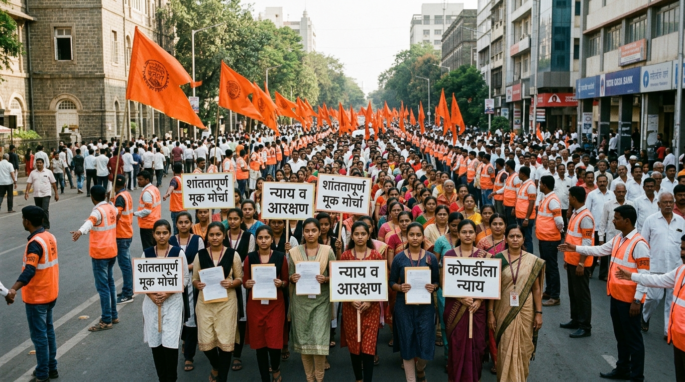

सत्यशोधक चळवळीपासून ते ५८ मूक मोर्चांच्या अभूतपूर्व जागतिक शांततापूर्ण आंदोलनापर्यंत — सामाजिक न्याय, शेतकरी हक्क, आरक्षण आणि लोकशाही मार्गाचा अधिकृत इतिहास.
Connect Maratha चे धोरण: हे दालन केवळ ऐतिहासिक अभ्यास, दस्तऐवजीकरण आणि सामाजिक संशोधनासाठी आहे. कोणत्याही राजकीय पक्षाचा प्रचार अथवा विद्वेषी भूमिकेशी व्यासपीठाचा संबंध नाही. सर्व चळवळींची नोंद भारतीय राज्यघटनेने दिलेल्या शांततापूर्ण निषेधाच्या अधिकाराच्या चौकटीत, अधिकृत वृत्तपत्र अहवाल, शासन निर्णय, न्यायालयीन आदेश व याचिका यांच्या आधारे निष्पक्षपणे करण्यात आली आहे.
९ ऑगस्ट २०१६ रोजी छत्रपती संभाजीनगर (औरंगाबाद) येथून सुरू झालेली आणि ९ ऑगस्ट २०१७ रोजी मुंबईच्या ऐतिहासिक महामोर्चात पोहोचलेली ५८ अभूतपूर्व शांततापूर्ण मोर्चांची मालिका.
जुलै २०१६ मध्ये कोपर्डी (जि. अहमदनगर) येथे घडलेल्या अल्पवयीन शाळकरी विद्यार्थिनीवरील अमानुष अत्याचार व हत्येनंतर समाजाच्या भावना उफाळल्या. अन्यायाविरुद्ध तीव्र आक्रोश निर्माण झाला.
कोणताही एक नेता नाही; सर्वसमावेशक मूक नेतृत्व. मोर्चाच्या अग्रभागी ५ ते १० शाळकरी विद्यार्थिनी, पाठीमागे माता-भगिनी, त्यानंतर ज्येष्ठ नागरिक, तरुण आणि शेतकरी. शून्य राजकीय भाषणबाजी.
१. कोपर्डी खटल्यातील आरोपींना फाशी.
२. मराठा समाजाला शिक्षण व नोकऱ्यांत आरक्षण.
३. ॲट्रॉसिटी
कायद्याचा गैरवापर रोखण्यासाठी दुरुस्ती.
४. शेतकरी कर्जमाफी व स्वामिनाथन आयोग लागू करणे.
लाखो लोकांचा जमाव असूनही एकही दगड फेकला गेला नाही, एकही काच फुटली नाही. मोर्चा संपल्यावर तरुण स्वयंसेवक रस्त्यावरील पाण्याच्या बाटल्या व कचरा गोणीत भरून परिसर चकाचक करत असत.
शासनाने विशेष न्यायालयीन खटला चालवून आरोपींना फाशीची शिक्षा ठोठावली. मराठा आरक्षणासाठी नारायण राणे समिती, मागासवर्ग आयोग व २०१८ चा SEBC कायदा अस्तित्वात आला.
जागतिक पातळीवर शांततापूर्ण जनआंदोलनाचा वस्तुपाठ. 'सारथी' (SARTHI) संस्थेची स्थापना, अण्णासाहेब पाटील आर्थिक विकास महामंडळाचे पुनरुज्जीवन, वसतिगृह योजना लागू.
२६ जुलै १९०२ रोजी बहुजन व मागास घटकांसाठी इतिहासात प्रथमच ५०% आरक्षणाची ऐतिहासिक घोषणा आणि प्राथमिक शिक्षण सक्तीचा कायदा.
प्रशासनात एकाच घटकाची मक्तेदारी होती. सामान्य मराठा, बहुजन, शेतकरी व वंचित शिक्षणापासून वंचित होते. शाहू महाराजांनी वसतिगृहे स्थापन करून शिक्षणाचे दार सर्वांसाठी उघडले.
मराठा विद्यार्थी बोर्डिंग (१९०१), व्हिक्टोरिया मराठा बोर्डिंग, जैन, लिंगायत, मुस्लिम, महार व चांभार बोर्डिंग्जची उभारणी. जातिभेद निर्मूलन व आंतरजातीय विवाह कायदा.
आधुनिक भारताच्या सामाजिक समतेचा पाया. डॉ. बाबासाहेब आंबेडकरांना मूकनायक वृत्तपत्रासाठी आर्थिक सहकार्य आणि माणगाव परिषदेत बहुजनांचे नेते म्हणून घोषणा.
मुंबई, बेळगाव, कारवार, निपाणीसह मराठी भाषिक प्रदेशांचे एकसंध महाराष्ट्र राज्य स्थापन करण्यासाठी उभारलेला प्रदीर्घ जनलढा.
कामगार, शेतकरी, विचारवंत, साहित्यिक व विद्यार्थ्यांचा महाआंदोलनात सहभाग. आचार्य अत्रे, कॉम्रेड डांगे, सेनापती बापट, शाहीर अमर शेख, अण्णा भाऊ साठे यांचा तेजस्वी लढा.
२१ नोव्हेंबर १९५५ रोजी मुंबईत शांततापूर्ण मोर्चावर झालेल्या गोळीबारात शेकडो जखमी व १०६ वीर हुतात्मा झाले. अखेर केंद्र सरकारला झुकवून १ मे १९६० रोजी महाराष्ट्र राज्य निर्माण झाले.
सीमाभागातील (बेळगाव, निपाणी, कारवार, भालकी) ८६५ मराठी भाषिक गावे महाराष्ट्रात समाविष्ट व्हावीत यासाठी महाराष्ट्र-कर्नाटक सीमा लढा आजही सर्वोच्च न्यायालयात सुरू आहे.
कुणबी नोंदींची तपासणी, सगेसोयरे अध्यादेश आणि ओबीसी प्रवर्गातून आरक्षणासाठी मराठवाड्यातील अंतरवली सराटी येथून सुरू झालेला लोकशाही मार्गातील सत्याग्रह.
सर्वोच्च न्यायालयाच्या २०२१ मधील निकालाने मराठा आरक्षण रद्द झाल्यानंतर, मराठवाड्यातील निजामकालीन कुणबी पुराव्यांच्या आधारे आरक्षण देण्याची मागणी पुढे आली.
अंतरवली सराटी येथे आमरण उपोषण, शेकडो किलोमीटरची शांततापूर्ण पदयात्रा, गावागावांत साखळी उपोषणे आणि मुंबईच्या दिशेने शांततापूर्ण मोर्चा.
न्यायमूर्ती संदीप शिंदे समितीची स्थापना; ५७+ लाख कुणबी नोंदींचा शोध; पात्र बांधवांना कुणबी जात प्रमाणपत्र वाटप प्रक्रिया सुरू.
महाराष्ट्रातील मराठा, कुणबी व शेतकरी बांधवांनी ऊस दर, कांदा हमीभाव, दूध दर आणि वीज दरवाढीविरोधात उभारलेली स्वाभिमानी आंदोलने.
'भीक नको हवे घामाचे दाम' या घोषणेसह उसाला एफआरपी (FRP) दर, कांद्याला हमीभाव आणि शेतकरी स्वातंत्र्य यासाठी रेल्वे रोको, चक्का जाम व पदयात्रा.
पद्मश्री विठ्ठलराव विखे पाटील, वसंतदादा पाटील, यशवंतराव चव्हाण यांच्या नेतृत्वात सहकारी चळवळीतून ग्रामीण अर्थव्यवस्थेची ऐतिहासिक उभारणी.
पाणी टंचाईवर मात करण्यासाठी जलयुक्त शिवार, ड्रिप इरिगेशन, ॲग्री-टेक स्टार्टअप्स आणि निर्यातक्षम फळबागांच्या उभारणीसाठी आधुनिक चळवळ.